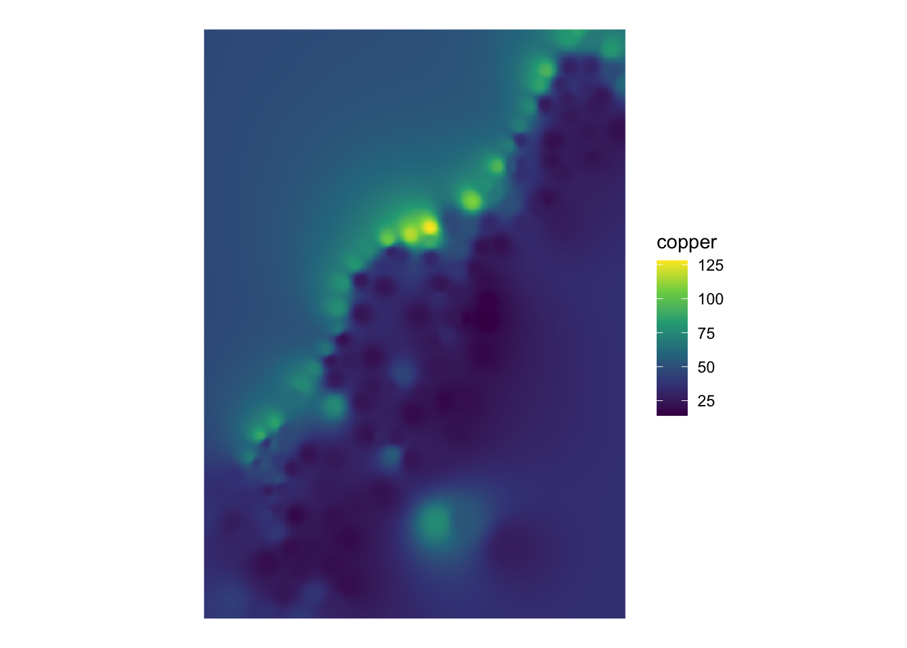
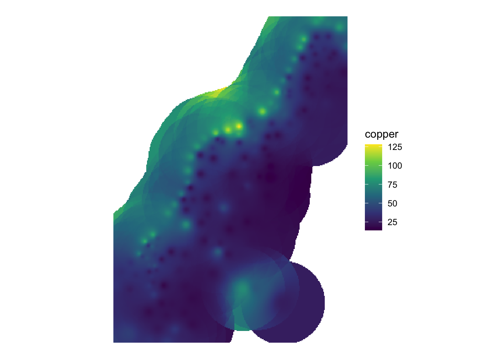
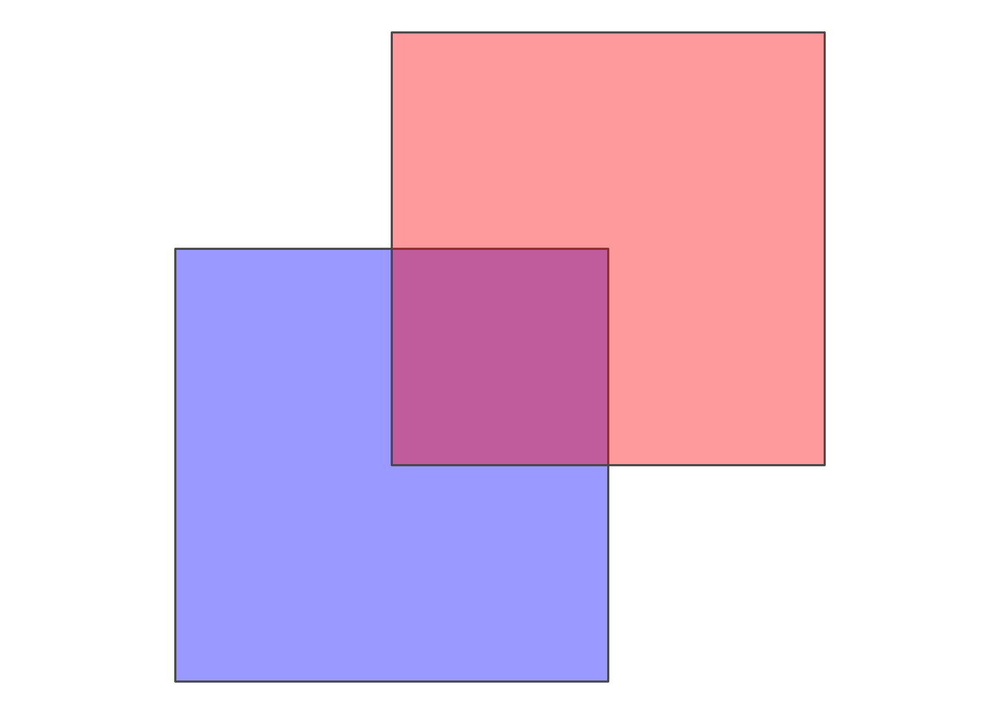

11 About this section
In ArcGIS, you create a topology rule by first creating a Feature Dataset in a Geodatabase, and then adding one or more Topology Rules to that Feature Dataset. You are provided with 32 different named rules which you can apply to this feature dataset (see 11.1). In R, you will find only the most commonly used 9 named spatial relations. These are known as “Spatial predicates”.
11.1 Spatial Predicates
In Opensource GIS Applications, there is a common standard to describe various relationships between features. They are referred to as “Spatial predicates” and are defined as follows. Take two geometries, a and b:
Equals:
aandbare equal if- their interiors intersect and
- no part of the interior or boundary of one geometry intersects the exterior of the other
Disjoint:
aandbare disjoint if they have no point in common (they form a set of disconnected geometries)Touches:
aandbtouch if- they have at least one point in common but
- their interiors do not intersect
Contains:
acontainsbif- no points of
blie in the exterior ofaand - at least one point of the interior of
blies in the interior ofa
- no points of
Covers:
acoversbif at least one point ofblies ina, and no point ofblies in the exterior ofaIntersects:
aandbintersect if the two geometries have at least one point in commonWithin (inside):
ais withinbifalies in the interior of thebCoveredBy:
ais covered bybifalies inbCrosses:
acrossesbif they have some but not all interior points in common.Overlaps:
aoverlapsb- if they have some (but not all) points in common and
- they have the same dimension and
- the intersection of the interiors of the two geometries has the same dimension as the geometries themselves

Figure 11.1: The 32 different topolgy rules that you can apply to one or more feature datasets in ArcGIS
In R, you can check topology using the DE-9IM together with st_relate().
11.2 Some examples
Let’s have a look at some examples from the named predicates as defined above.
11.2.1 Equals
11.2.2 Disjoint
11.2.3 Touches
11.2.4 Contains
11.2.5 Covers
11.2.6 Intersects
11.2.7 Within
11.2.8 CoveredBy
11.2.9 Crosses
11.2.10 Overlaps
11.2.11 Touches
Lets take the example of a chessboard:

To find out which field touch field number 36, we can write the following line of code:
## Sparse geometry binary predicate list of length 1, where the predicate was `touches'
## 1: 27, 28, 29, 35, 37, 43, 44, 45Visually, these are the following fields:

11.2.12 Custom relationships
These named spatial predicates are all based on the Dimensionally Extended 9-Intersection Model (DE-9IM).
Regarding the chessboard example above, we can imagine a chess piece placed on field #36. If this figure was a Queen or a King, all of the fields resulting from st_touches are reachable. In terms of contiguity, this is what is typically called the Queen’s or the King’s Case. However, this is might not the relationship that we are looking for: Say we would want to exclude the diagonal fields from our selection, the way a Rook would move in chess. How can we implement this in R?
None of the named topological relationships above (11.1) correctly describes this case (touches_but_not_at_edges or shares_boundary would be appropriate). In this case, we can use the Dimensionally Extended 9-Intersection Model (DE-9IM) to precisely formulate the relationship we are looking for: the Rooks Case.
IN DE-9IM, the intersection of two objects is viewed at three levels for each object: The Interior, the Boundary and the Exterior (\(3^2= 9\), hence the name). These levels mean different things for Polygons, Lines or Points, but let’s just look at the simple case for now, polygons (which is the case for our chess fields). Take the following example

The interior of a polygon is the area inside the polygon. If the two areas overlap (as is the case of blue and red), the result from an intersection would also be a polygon. More formally: The Dimesion of \(I(blue) \cap I(red)\) is an area. Areas get a value of 2, Lines 1 and points 0. If there is no intersection (as is the case in blue and green), the result equals to FALSE.
This was the first of 9 Intersections. Let’s look at the next one:
Interior of blue with the boundry of green:

The resulting object has a dimenion “line,” i.e. 1. Formally: \(dim(I(blue) \cap B(red)) = 1\). Now just for the sake of looking at the third level (Exerior), let’s look at what this looks like:
The resulting object is again an area, i.e. 2. Formally \(dim(I(blue) \cap E(red)) = 2\).
If we go through all intersections of Interior, boundry and Exterior of both geometries, we can denote for each comination what type of dimesion we “allow.” This can be either 0 (for points), 1 (for lines) or 3 (for areas) or TRUE (for either of these), or FALSE (for none of these) or * (for "I dont care).

11.2.12.1 Rooks Case
If we go throught the all nine combinations of the DE-9IM, this is what defines the rooks case:
| Interior | Boundary | Exterior | |
|---|---|---|---|
| Interior | nothing | don’t care | don’t care |
| Boundary | don’t care | Line | don’t care |
| Exterior | don’t care | don’t care | don’t care |
We can now write this into a string, starting from the top left: F***1****
Now that we have this string, we case use st_relate()and specify the string as the pattern we are looking for:
## Sparse geometry binary predicate list of length 1, where the predicate was `relate_pattern'
## 1: 28, 35, 37, 44Which visually gives us this pattern:

Because this was so much fun, let’s also have a look at the opposite, the Bishops Case.
11.2.12.2 Bishops Case
| Interior | Boundary | Exterior | |
|---|---|---|---|
| Interior | nothing | don’t care | don’t care |
| Boundary | don’t care | Point | don’t care |
| Exterior | don’t care | don’t care | don’t care |
## Sparse geometry binary predicate list of length 1, where the predicate was `relate_pattern'
## 1: 27, 29, 43, 45Visually:
